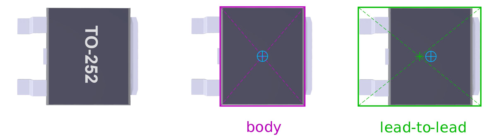
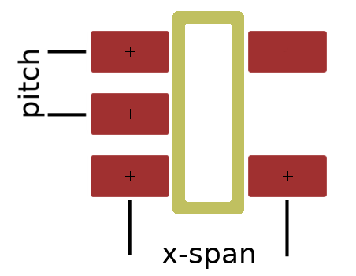

Package concepts
It is obvious that a specification for a component package needs to record the
size, number of pins, pitch, and a few other characteristics. And it needs to
have a kind of label that uniquely identifies it. Yet, as you look at the
user-interface of Packages, you will spot right-away
that there are multiple, different, fields for the size of the package, as well
as multiple “labels” that all uniquely point to the same package.
Common names & variants
The QFP group of packages comprises ranges of with pin counts from 16 to 256 and
pitches from 0.4 mm to 1.0 mm. With a chosen pin count and pitch, for example
QFP32 with pith 0.5, the name still refers to a group of packages that all share
the essential dimensions in the flat plane. There are variants, like LQFP which
is about 1.5 mm thick as opposed to 2.8 mm nominally for the plain QFP
(the “L” in LQFP stands for low-profile), or TQFP with a
nominal height of 1.0 mm (“T” stands for thin). There
are also variants with bumpers in the corners to protect the leads, but
these bumpers are not included in the body size —so the core dimensions
are still the same as for QFP.
All these variants (with the same pin count & pitch) share the same footprint,
and have the same pitch and body & lead-to-lead sizes.
Packages therefore groups them together in a
single specification. The variants, are listed in that specification with their
distinguishing attributes.
Regardless, even a package group may be known under different names. As
already noted earlier, in part this is due to different standardization organizations
writing their own standard for one and the same package; see chapter
Package naming standards for more
information. Also note that standardization organizations tend to follow
industry practice —the package exists before the standard gets written.
Therefore, Packages allows you to add aliases for
each common name (as well as adding variants).
See also the topic Metric versus Imperial
for another reason why a class is known under different names: sometimes a
standardization organization cannot decide what is (or should be) the standard.
Package dimensions and outlines
The size or bounding box of a package may refer to one of four
dimensions, and each has its purpose.

Figure 2: Package sizes
The body size is, indeed, the size of the bounding box around the body
excluding the pins. The lead-to-lead size is the bounding box including
the pins. For packages that have no pins extruding from the sides of body (like
QFN or BGA), the body and lead-to-lead sizes are the same. In the package data
file (see the File format specification),
the lead-to-lead size may be omitted in case it is equal to the body size.
The footprint contour (also called the footprint outline) is
the bounding box around the footprint. With the SOT23-5 example in the picture
above, the contour is wider than the lead-to-lead size, but not as high. The
courtyard goes around the package, the leads and the footprint; this is
always the biggest size.
Packages stores the body size, lead-to-lead size
and footprint contour. The courtyard is not stored, because it is the envelope
around the lead-to-lead size and the footprint contour (and it can therefore be
derived from these dimensions).
The horizontal and vertical dimensions for body, lead-to-lead, spans and others
depend on how the how the package is oriented: turn it by 90 degrees and the
x & y swap places. Therefore, to properly specify the any dimensions of a
package, we must first establish the normal orientation (or zero-orientation)
of that package. See chapter Normal orientations
for the standardized normal orientations of packages.
The courtyard is not stored in the package file (and it cannot be entered in the
application), because it is easily computed from the other sizes. See the manual
for the equations for calculating the courtyard.
Origin offsets
An essential concept for machine assembly of a PCB (with a pick-&-place machine)
is the centroid: the centre of mass. A pick-&-place machine picks up the component
at its centroid. The rationale is that pick-&-place machines use suction to hold
the component “glued” to its nozzle, and the amount of suction is
calibrated to the weight of the component. However, if a component is not in
balance beneath the nozzle, it may “float” on the nozzle as the
nozzle accelerates and decelerates in its movements from the feeder to the
placement position. In other words, placement may then be less accurate.
For symmetric packages (the grand majority of packages), the centroid coincides
with the geometric centre. For these, the origin offsets are zero, for the body,
the lead-to-lead envelope and for the footprint contour. Otherwise, you need to
specify the appropriate offsets of the geometric centre relative to the centroid.

Figure 3: Centroid and geometric offset
In the above figure of a TO-252 package (also known as DPAK), the centroid is
marked with the blue ⊕ symbol. When looking at the body of the TO-252 package,
the centroid still falls on the geometric centre of the body —which is by
design. For the lead-to-lead envelope, this is not the case: the geometric
centre is offset to the left of the centroid. In the concrete case of the
TO-252 package, the origin offset of the lead-to-lead envelope is
X: -0.9 mm, Y: 0 mm.
The figure omits a drawing of the footprint for this package, but an origin
offset applies to the footprint contour as well (and, consequently, to the
courtyard too).
Pitch and spans
The pitch is the distance between two pins or pads on the same row. The span is
the distance between pads of opposing rows. It is illustrated in Figure 4
with a footprint for the SOT23-5 package.

Figure 4: Pitch and span (on a footprint)
The pitch is an attribute of the package (the pitch of a footprint is
necessarily the same as the spacing of the pins of the package), but the span
depends on the footprint. Typically, the span (horizontal and/or vertical) is
slightly smaller than the lead-to-lead size in the same direction, but there is
no hard rule —it depends on the termination type amongst others. A quad-row
package has both a horizontal and a vertical span; these are the same for square
packages, but different for a quad-row rectangular package.
A 2-pin surface-mount component typically has a span, but not a pitch.
Through-hole 2-pin connectors form an exception, their pin distance is often
specified as their “pin pitch”.